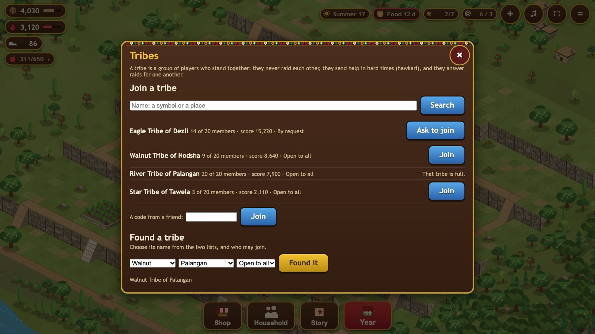

Tribes and score
A tribe is a group of up to 20 players who stand together. Tribes need Play online and a Diwan-khana of level 2. Open them with the Tribe button.
Finding, joining and founding

- Search by name: type a symbol or a place ("eagle", "Dezli"). The strongest tribes are listed first.
- Join an open tribe at once, or ask to join one that is by request: its chief or an elder decides.
- A code from a friend lets you join their tribe straight away. The code is shown at the top of the tribe panel.
- Found your own: choose its name from two lists (a symbol and a place, like "Eagle Tribe of Dezli") and whether it is open to all or by request.
Chief, elders, members
The founder is the chief. The chief can make elders, hand the tribe to someone else, send a member away, and change who may join. Elders can accept or decline requests to join. If the chief leaves, an elder takes over; when the last member leaves, the tribe closes.
Hawkari: helping each other

- Ask the tribe for one thing you are short of: walnuts, juice or a fruit. It is a ready-made request, one at a time.
- Give to those who ask, 50 / 200 / 500 at a time. What you give leaves your own stores.
- There is a daily limit that grows with your Diwan-khana: 300 walnuts or juice a day at level 1, up to 3,000 at level 5, and a tenth of that for each fruit.
- The first gift you give in a day raises your standing with the tribe by one.
Raids and the tribe
- No real raids inside the tribe. You are never offered a tribe mate's village.
- Practice raids. You can practise on a mate's village: nothing is taken, no guard is hurt, and it costs no standing.
- Answering for each other. When an outsider raids a member, any mate can raid that village back for them, at no cost to standing.
News of the tribe
The game writes the news itself: who joined, who asked for what, who helped whom, who was raided, who answered. There is no chat.
Village score
Your score shows how far your village has come. Every finished building counts its level times a weight: the Diwan-khana 100, most buildings 10, traps 3, walls 1. Every year your village has lived adds 25. You see your score in the Year panel, and others see it in the tribe and when they scout your village. A tribe's score is the sum of its members' scores.